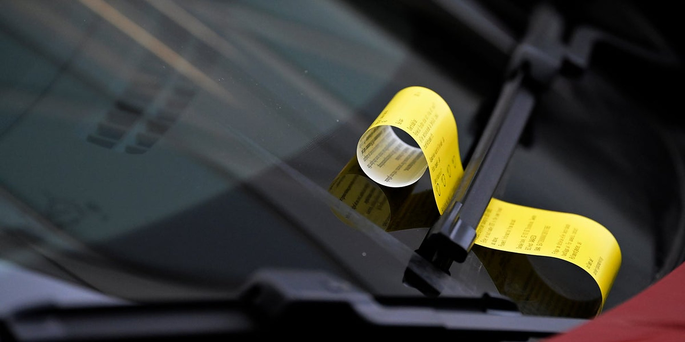
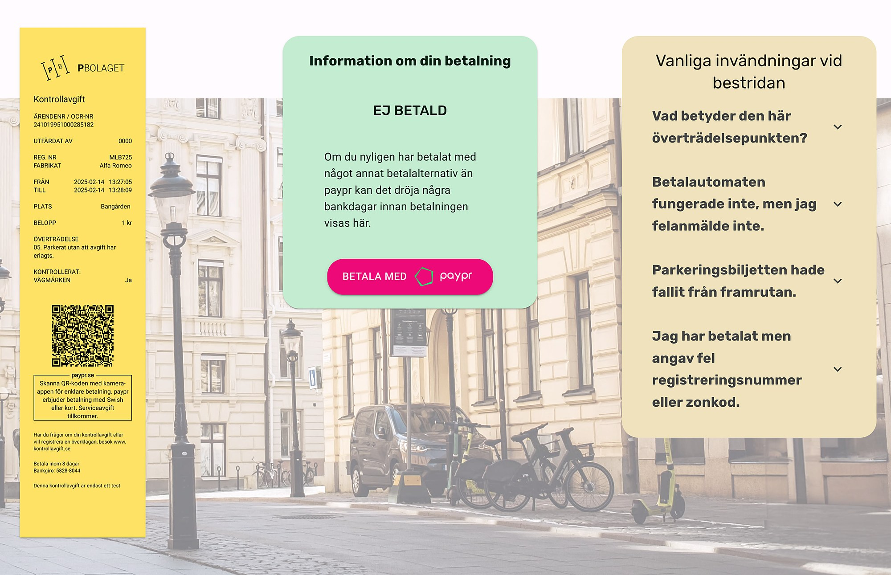
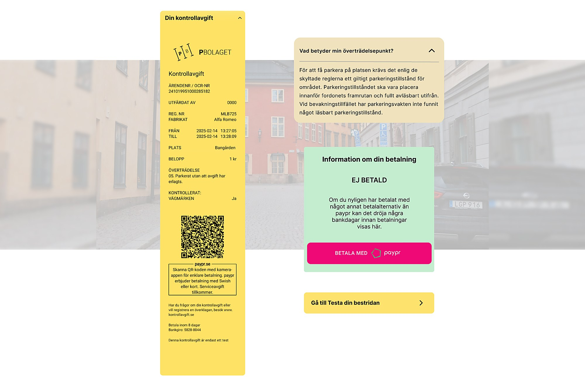

KONTROLLAVGIFT

My role
- TeamMe and three classmates
- What I didThe Figma prototype and all its iterations. We did the research, workshop and tests together, to move faster
- Not my workThe kontrollavgift.se logo
- ToolsFigmaMiro
Introduction
People who get a parking fine are sent to kontrollavgift.se to pay or appeal it. Our job was to help them quickly understand why they got the fine and how to appeal it online.
Design challenge
How might we help people quickly understand when and how they can appeal a parking fine, while reducing unnecessary cases for customer service?
Process
We followed the design thinking steps.
- 01DiscoverInterviews and user tests to understand people’s frustrations.
- 02DefinePinpointed the biggest pain points in the journey.
- 03IdeateA workshop in Miro to come up with new solutions.
- My part04PrototypeA clickable prototype in Figma, built for testing.
- My part05TestI iterated the prototype from feedback and what we observed.
Before
A generic list of common objections. People found the information unclear, which led to misunderstandings and irritation.
They couldn’t see how decisions were made, which created mistrust. Many called customer service just to be sure.


After
- Your violation, explainedInstead of a generic list, people see what their specific violation means.
- Clear payment statusYou see at once whether the fine is paid.
- A direct way to appealA “Test your appeal” button leads straight to the appeal.
Expected impact
We didn’t get data from the client, so the impact isn’t measured. Since people now see why they got the fine and what to do next, we expect more trust and fewer calls to customer service.
What I learned
People accept even bad news, like a fine, more easily when they understand it. Clear and honest information did more for trust than any visual detail.